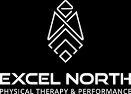

Career
After years of gymnastics coaching experience, I love creating progressive circuits and drills to address form breaks and teach new skills. I also have years of customer service experience, interacting with people from all walks of life.
Because these jobs require a doctorate at a minimum, and I am working on completing my undergraduate degree, my skill set does not align with any physical therapy position yet, nor am I planning on applying for any positions in the field currently because I do not possess the minimum degree required. I intend to pursue a doctorate in physical therapy, which would make me a potential candidate for a position in a physical-therapy related field. I am taking active steps toward that goal. I would be interested in working for myself at a cash-based clinic, because I don't prefer the bureaucratic hoops of the current health insurance industry. My passions lie in helping people who feel trapped in hurting bodies find help through movement and lifestyle changes. I have currently job shadowed at two private practices, and am working on applying to graduate school within the next year or so. There are two private practices in the area that I would be interested in gaining experience at.After gaining experience in the field, an area of interest would include corporate wellness in physically demanding fields. After learning more about what blue collar workers experience in their fields, I would be interested in injury prevention and wellness for professions such as firefighting, welding, and construction to help workers maintain their health throughout their career and beyond.
DISCLAIMER: this website is for a class project, these businesses are used as an example of the types of areas that I have interest in to fulfill guidelines for the project. This website is not a reflection of these businesses.
InMotion Therapy

2701 W Superior St Ste 112, Duluth, MN, 55806
(218)727-1180
Website: https://www.inmotiontherapy.com/
I believe in the care model they present, because it focuses on the entire body, rather than just the injury.
Excel North Physical Therapy and Performance
4135 Richard Avenue Suite 102, Hermantown, MN, 55811
(218)206-7775
Website: https://www.excelnorthpt.com/
I would also be interested in an internship at Excel North Physical Therapy and Performance, because they not only focus on PT, but also on athletic training.